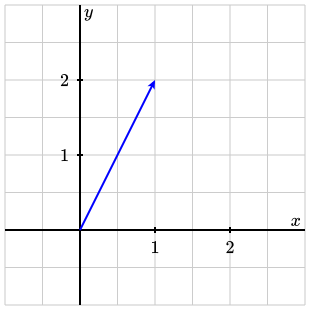
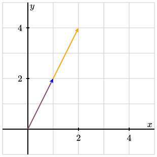
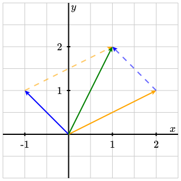
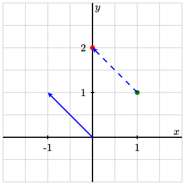

Section 2.1 Vectors
You may be familiar with most of the material in this section. We will review some fairly fundamental properties of vectors in \(\R^n\text{.}\) A vector in \(\R^n\) is simply an element of \(\R^n\text{,}\) or, in other words, an \(n\)-tuple \((a_1,\ldots,a_n)\in\R^n\text{.}\) So this definition coincides with the definition of a point in \(\R^n\text{.}\) We use different words when we want to think of these objects in different ways. Whenever I use the word point, you should visualize a dot in \(\R^n\text{.}\) However, vectors are usually represented by an arrow based at the origin and ending in the coordinates given by the vector.
Example 2.1.1.
We will often work with column vectors. This means that instead of writing vectors horizontally, we will write them vertically. For example, the vector \((1,2)\) will be written as \(\colvec{1 \\ 2}\text{.}\) This is a standard convention in linear algebra. I will explain the reason for this choice after we introduce matrix multiplication in the next section. I will extend this convention to points as well, i.e. from now on I will organize the coordinates of a point vertically.
All vectors have a length, often called the norm.
Definition 2.1.3.
The norm of the vector
\begin{equation*}
\bv=\colvec{a_1 \\ a_2 \\ \vdots \\ a_n}
\end{equation*}
is defined to be the number
\begin{equation*}
\sqrt{\sum_{i=1}^n a_i^2}=\sqrt{a_1^2+a_2^2+\ldots+a_n^2}\text{.}
\end{equation*}
We denote the norm of \(\bv\) by \(\lVert\bv\rVert\text{.}\)
Example 2.1.4.
The norm of the vector
\begin{equation*}
\bv=\colvec{1 \\ -1 \\ -2 \\ 3}
\end{equation*}
in \(\R^4\) is
\begin{equation*}
\lVert\bv\rVert = \sqrt{1^2 + (-1)^2 + (-2)^2 + 3^2}=\sqrt{1 + 1 + 4 + 9}=\sqrt{15}\text{.}
\end{equation*}
Note that this notion of norm is consistent with the familiar notions of Euclidean distance and length.
Vectors of norm \(1\) are called unit vectors. Among all the unit vectors in \(\R^n\) there is a collection of \(n\) that are especially important. The unit vectors
\begin{equation*}
\be_1=\colvec{1 \\ 0 \\ 0 \\ \vdots \\0},\qquad\be_2=\colvec{0 \\ 1 \\ 0 \\ \vdots \\0},\qquad\cdots\qquad,\be_n=\colvec{0 \\ 0 \\ 0 \\ \vdots \\1}
\end{equation*}
in \(\R^n\) are called the standard unit vectors of \(\R^n\text{.}\) To be completely clear regarding their definition, \(\R^n\) contains exactly \(n\) standard unit vectors. For each integer \(i\) between \(1\) and \(n\text{,}\) the standard unit vector \(\be_i\) is the only vector with \(i\)th entry equal to \(1\) and every other entry equal to \(0\text{.}\)
It is possible to multiply vectors by a scalar, i.e., by a real number. If \(\lambda\) is a real number and
\begin{equation*}
\bv=\colvec{a_1 \\ a_2 \\ \vdots \\ a_n}
\end{equation*}
is a vector in \(\R^n\text{,}\) then we define \(\lambda \bv\) to be the vector
\begin{equation*}
\colvec{\lambda a_1 \\ \lambda a_2 \\ \vdots \\ \lambda a_n}\text{.}
\end{equation*}
In other words, the \(i\)th coordinate of \(\lambda \bv\) is defined to be \(\lambda\) times the \(i\)th coordinate of \(\bv\text{.}\) Geometrically, this corresponds to stretching the vector—if \(\lambda > 1\)—or contracting it—if \(0\leq\lambda < 1\)). When \(\lambda=1\text{,}\) the vector is not altered by multiplication by \(\lambda\text{.}\) If \(\lambda\) is a negative real number, than the direction of the vector is changed.
Example 2.1.5.
For instance, \(2\cdot \colvec{1 \\ 2}=\colvec{2 \\ 4}\text{.}\) In the figure below, the vector \(\colvec{1 \\ 2}\) is represented in blue, and the vector \(2\cdot\colvec{1 \\ 2}\) is represented in orange. In the image, the vector \(\colvec{1 \\ 2}\) is translucent so that it is clear that the representation of \(2\cdot \colvec{1 \\ 2}\) is based at the origin.

It should come as no surprise that these two vectors lie in the same line through the origin. But more on this later.
If \(\bv\) is the vector
\begin{equation*}
\bv=\colvec{a_1 \\ a_2 \\ \vdots \\ a_n}
\end{equation*}
in \(\R^n\text{,}\) we define \(-\bv\) to be
\begin{equation*}
-\bv:=\colvec{-a_1 \\ -a_2 \\ \vdots \\ -a_n}\text{.}
\end{equation*}
It is easy to check (do it!) that \((-1)\cdot\bv=-\bv\text{.}\)
We can also add two vectors in \(\R^n\text{.}\) If
\begin{equation*}
\bv=\colvec{a_1 \\ a_2 \\ \vdots \\ a_n}\quad \text{ and }\quad \bw=\colvec{b_1 \\ b_2 \\ \vdots \\ b_n}
\end{equation*}
are two vectors in \(\R^n\text{,}\) then their sum is the vector whose \(i\)th coordinate is \(a_i+b_i\text{:}\)
\begin{equation*}
\bv + \bw = \colvec{a_1+b_1 \\ a_2+b_2 \\ \vdots \\ a_n+b_n}\text{.}
\end{equation*}
Example 2.1.7.
If \(\bv=\colvec{2 \\ 1}\) and \(\bw=\colvec{-1 \\ 1}\text{,}\) then \(\bv+\bw=\colvec{1 \\ 2}\text{.}\) Graphically, the sum of \(\bv\) and \(\bw\) can be obtained via the parallelogram rule.

In the figure above, the vector \(\bv\) is depicted in orange, the vector \(\bw\) in blue, and the sum of the two in green.
We also define \(\bv-\bw\) to mean \(\bv + (-\bw)\text{,}\) so that if
\begin{equation*}
\bv=\colvec{a_1 \\ a_2 \\ \vdots \\ a_n}\quad \text{and}\quad\bw=\colvec{b_1 \\ b_2 \\ \vdots \\ b_n}\text{,}
\end{equation*}
then
\begin{equation*}
\bv-\bw=\colvec{a_1-b_1 \\ a_2-b_2 \\ \vdots \\ a_n-b_n}\text{.}
\end{equation*}
Since, formally, vector and points in \(\R^n\) are the same thing, the rules of vector addition allow us to add two points or a point and a vector. By convention, we think of the addition of a vector to a point as another point: point + vector = point. The idea is that the vector represents the displacement of the point.
Example 2.1.9.
Let’s consider the point \(\colvec{1 \\ 1}\) in \(\R^2\) and the vector \(\colvec{-1 \\ 1}\text{.}\) Then
\begin{equation*}
\colvec{1 \\ 1} + \colvec{-1 \\ 1}=\colvec{0 \\ 2}\text{,}
\end{equation*}
and we should think of \(\colvec{0 \\ 2}\) as the point obtained by displacing the point \(\colvec{1 \\ 1}\) by the vector \(\colvec{-1 \\ 1}\text{.}\)

In the figure above, the vector \(\colvec{-1 \\ 1}\) is represented in blue, and the point \(\colvec{1 \\ 1}\) is in green. After adding \(\colvec{-1 \\ 1}\) to the point \(\colvec{1 \\ 1}\text{,}\) we end up with the point \(\colvec{0 \\ 2}\text{,}\) graphically represented in red. The dashed blue arrow is the vector \(\colvec{-1 \\ 1}\) based on the point \(\colvec{1 \\ 1}\) so that its interpretation as displacement can be clearly seen.
The space \(\R^n\) is an example of a vector space. It will be a while before we see the formal definition of a vector space, but I will now list a series of properties that make \(\R^n\) one. Proving that these properties do hold is an instructive exercise that you should attempt. Most of the properties follow immediately from the definitions of scalar multiplication and vector addition. At the very least, you should try out a few examples. I will include proofs for some of the properties that you can use as a source of inspiration.
-
Associativity of vector addition: \(\bv + (\bw+\bu)=(\bv+\bw)+\bu\) for all vectors \(\bv,\bw,\bu\in \R^n\text{.}\)This follows from the associativity of addition of real numbers. What this property says is that if we first add \(\bw\) to \(\bu\) and then add the result to \(\bv\text{,}\) the result that we obtain will be the same that we get if we choose to first add \(\bv\) and \(\bw\) together and then add \(\bu\text{.}\) Indeed, let\begin{equation*} \bv=\colvec{a_1 \\ a_2 \\ \vdots \\ a_n},\quad \bw=\colvec{b_1 \\ b_2 \\ \vdots \\ b_n}\quad \text{and}\quad\bu=\colvec{c_1 \\ c_2 \\ \vdots \\ c_n}\text{.} \end{equation*}Then, by definition\begin{equation*} \bw+\bu=\colvec{b_1+c_1 \\ b_2+c_2 \\ \vdots \\ b_n+c_n} \end{equation*}and so\begin{equation*} \bv+(\bw+\bu)=\colvec{a_1+(b_1+c_1) \\ a_2+(b_2+c_2) \\ \vdots \\ a_n+(b_n+c_n)}\text{.} \end{equation*}Similarly, we can show that\begin{equation*} (\bv+\bw)+\bu=\colvec{(a_1+b_1)+c_1 \\ (a_2+b_2)+c_2 \\ \vdots \\ (a_n+b_n)+c_n}\text{.} \end{equation*}Since \(a_i+(b_i+c_i)=(a_i+b_i)+c_i\) for all \(i\) due to the associativity property of the addition of real numbers, we conclude that \(\bv+(\bw+\bu)=(\bv+\bw)+\bu\text{.}\)
-
Existence of identity element for vector addition: the zero vector \(\bz\) in \(\R^n\)(i.e. the vector in \(\R^n\) whose entries are all \(0\)) satisfies \(\bv + \bz=\bv\text{.}\)
-
Existence of inverse element for vector addition: we have \(\bv+(-\bv)=\bz\) for every vector \(\bv\in\R^n\text{.}\)
-
Compatibility of real number multiplication with scalar multiplication: \(\lambda(\mu\bv)=(\lambda\mu)\bv\) for every vector \(\bv\in\R^n\) and real numbers \(\lambda,\mu\in \R\text{.}\)
-
Existence of identity for scalar multiplication: we have \(1\cdot\bv=\bv\) for every vector \(\bv\in\R^n\text{.}\)
-
Distributivity of scalar multiplication with respect to vector addition: \(\lambda(\bv+\bw)=\lambda\bv+\lambda\bw\) for all vectors \(\bv,\bw\in\R^n\) and any real number \(\lambda\in\R\text{.}\)
-
Distributivity of scalar multiplication with respect to addition of real numbers: \((\lambda+\mu)\bv=\lambda\bv+\mu\bv\) for all real numbers \(\lambda,\mu\in\R\) and any vector \(\bv\in\R^n\text{.}\)
We will re-encounter these eight properties later in the course.
The last operation that I need to mention in this section is the dot product between two vectors in the same space. If
\begin{equation*}
\bv=\colvec{a_1 \\ a_2 \\ \vdots \\ a_n}\quad \text{and} \quad\bw=\colvec{b_1 \\ b_2 \\ \vdots \\ b_n}
\end{equation*}
are two vectors in \(\R^n\) then the dot product between them, denoted by \(\bv\cdot\bw\text{,}\) is the real number defined by
\begin{equation*}
\bv\cdot\bw=\sum_{i=1}^n a_ib_i=a_1b_1+a_2b_2+\ldots+a_nb_n.
\end{equation*}
In other words, we multiply the \(i\)th coordinate of \(\bv\) by the \(i\)th coordinate of \(\bw\) for each \(i\) and then we add all these products together.
Checkpoint 2.1.11.
Example 2.1.12.
Consider the vectors
\begin{equation*}
\bv=\colvec{1 \\ -2 \\ 3}\quad\text{and}\quad \bw=\colvec{0 \\ 2 \\ 5}
\end{equation*}
in \(\R^3\text{.}\) Their dot product is
\begin{equation*}
\bv\cdot\bw = 1\times 0 + (-2)\times 2 + 3\times 5=-4+15=11\text{.}
\end{equation*}
While it is clearly true that \(\bv\cdot\bz=\bz\cdot\bv=0\) for every vector \(\bv\in\R^n\text{,}\) you should be aware of the fact that it is possible to have \(\bv\cdot\bw=0\) with neither \(\bv\) nor \(\bw\) be the zero vector. For example,
\begin{equation*}
\colvec{1 \\ 2}\cdot \colvec{2 \\ -1}=1\times 2 + 2\times (-1)=2-2=0\text{.}
\end{equation*}
We will later see that this happens precisely when the vectors are perpendicular to each other.
The following proposition lists a few important properties of the dot product. Showing that these properties hold is not too hard, and you should try to come up with a proof by yourself. If are not able to prove these three properties, do not worry. Just have a look at the proof that I wrote. But try to find an argument yourself first. You will learn a great deal from earnestly trying to do something even if you fail.
Proposition 2.1.13.
The following properties hold for all vectors \(\bv,\bw,\bu\in\R^n\) and all real numbers \(\lambda,\mu\text{:}\)
-
\(\bv\cdot\bw=\bw\cdot\bv\text{.}\)
-
\((\lambda\bv+\mu\bw)\cdot \bu=\lambda(\bv\cdot \bu)+\mu(\bw\cdot \bu)\text{.}\)
Proof.
Let
\begin{equation*}
\bv=\colvec{a_1 \\ \vdots \\ a_n},\quad\bw=\colvec{b_1 \\ \vdots \\ b_n}\quad\text{and}\quad\bu=\colvec{c_1 \\ \vdots \\ c_n}
\end{equation*}
be three vectors in \(\R^n\text{,}\) and let \(\lambda\) and \(\mu\) be two real numbers
The first property is a straightforward consequence of the definition of dot product. Indeed,
\begin{equation*}
\bv\cdot\bw=\sum_{i=1}^n a_ib_i\text{.}
\end{equation*}
Since multiplication is commutative, we have
\begin{equation*}
\bv\cdot\bw=\sum_{i=1}^n a_ib_i=\sum_{i=1}^n b_ia_i\text{.}
\end{equation*}
But the right-hand side of this expression is precisely the definition of \(\bw\cdot\bv\text{.}\)
In order to prove the second property, start by noting that, for \(1\leq i\leq n\text{,}\) the \(i\)th coordinate of \(\lambda\bv+\mu\bw\) is \(\lambda a_i + \mu b_i\text{.}\) Therefore,
\begin{equation*}
\begin{aligned}
(\lambda \bv + \mu \bw)\cdot \bu \amp= \sum_{i=1}^n(\lambda a_i + \mu b_i)c_i\\
\amp=\sum_{i=1}^n(\lambda a_ic_i + \mu b_ic_i)\\
\amp=\sum_{i=1}^n \lambda a_ic_i + \sum_{i=1}^n \mu b_ic_i\\
\amp= \lambda\sum_{i=1}^n a_ic_i+\mu\sum_{i=1}^n b_ic_i.
\end{aligned}\text{.}
\end{equation*}
Since
\begin{equation*}
\bv\cdot\bu = \sum_{i=1}^n a_ic_i\quad \text{and}\quad \bw\cdot\bu=\sum_{i=1}^n b_ic_i\text{,}
\end{equation*}
we have
\begin{equation*}
\lambda\sum_{i=1}^n a_ic_i+\mu\sum_{i=1}^n b_ic_i=\lambda(\bv\cdot\bu)+\mu(\bw\cdot \bu)\text{,}
\end{equation*}
as we wanted.
We will now prove the third and last property in the statement of the proposition. To do that, we will assume that \(\bv\) is non-zero. This means that at least one of its coordinates is not zero, i.e. \(a_k\neq 0\) for some \(k\in\{1,2\ldots,n\}\text{.}\) We have
\begin{equation*}
\bv\cdot\bv = \sum_{i=1}^n a_ia_i=\sum_{i=1}^n a_i^2
\end{equation*}
by the definition of dot product. Every term in this sum is non-negative because it is a square of a real number. Therefore,
\begin{equation*}
\sum_{i=1}^n a_ia_i=\sum_{i=1}^n a_i^2\geq a_k^2\text{.}
\end{equation*}
Since \(a_k\neq 0\text{,}\) we have \(a_k^2 > 0\text{,}\) yielding \(\bv\cdot\bv > 0\text{.}\)
Exercises Exercises
1.
Evaluate each of the following expressions.
-
\(\displaystyle 3\colvec{1 \\ 2} - 2\colvec{3\\ -1}\)
-
\(\displaystyle -2\left(\colvec{1 \\ 2\\ 4} + 3\colvec{-3 \\ 5 \\ 2}\right)\)
-
\(\displaystyle 5\colvec{1 \\ 2}-4\colvec{3 \\ -3} + 2\colvec{1 \\ 1}\)
-
\(\displaystyle \colvec{2 \\ -2 \\3}\cdot\colvec{2 \\ 1 \\ 3}\)
-
\(\displaystyle 3\colvec{1 \\ 2}\cdot\left(2\colvec{3 \\ -1} - 3\colvec{1 \\ -1}\right)\)
2.
Show that if \(\bv\in\R^n\) is a vector and \(\lambda\in\R\) is a scalar satisfying \(\lambda\bv=0\text{,}\) then either \(\lambda=0\) or \(\bv=\bz\text{.}\)
3.
Are there real numbers \(\lambda\) and \(\mu\) such that
\begin{equation*}
\lambda\colvec{1 \\ 2} + \mu\colvec{2 \\ 4}=\colvec{3 \\ 0}\text{?}
\end{equation*}
Justify your answer.
4.
Find real numbers \(\lambda\) and \(\mu\) such that
\begin{equation*}
\lambda\colvec{3 \\ 2} + \mu\colvec{2 \\ 3} = \colvec{1 \\ 0}\text{.}
\end{equation*}
5. The parametric equation of a line.
Consider a line \(\ell\) in the plane given by the equation \(ax+by=c\text{,}\) where \(a,b,c\in\R\) and either \(a\neq 0\) or \(b\neq 0\text{.}\) Let \(P=(x_0,y_0)\) be a point in the line \(\ell\text{.}\) Also, let \(\bv\) be a non-zero vector that is parallel to \(\ell\text{.}\)
-
Show that if \(R=(x_1,y_1)\) is another point in \(\ell\text{,}\) then there exists \(t\in\R\) such that \(R=P+t\bv\text{.}\)
What this means is that the line \(\ell\) can be described as the set of points of the form \(P+t\bv\) where \(P\) is a point on the line, \(\bv\) is a vector parallel to the line, and \(t\in\R\) is a real parameter. This is known as the parametric equation of a line.
6. ★ Cauchy-Schwarz inequality in \(\R^2\).
Show that \(\bv\cdot\bw\leq \lVert\bv\rVert\lVert\bw\rVert\) for all vectors \(\bv,\bw\in\R^2\text{.}\)